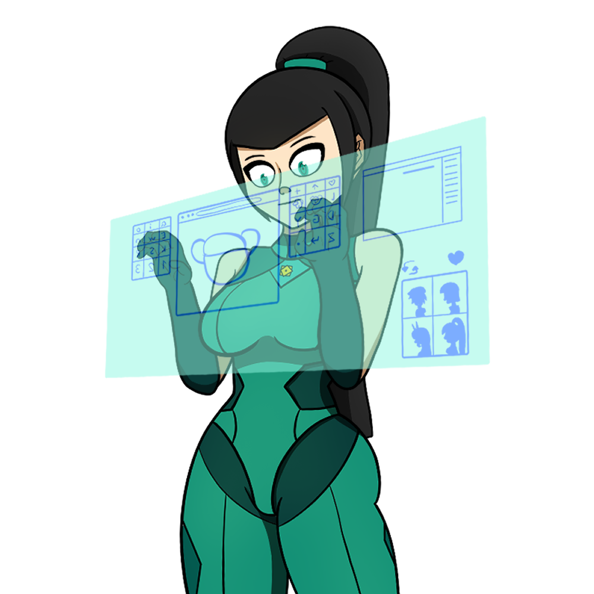
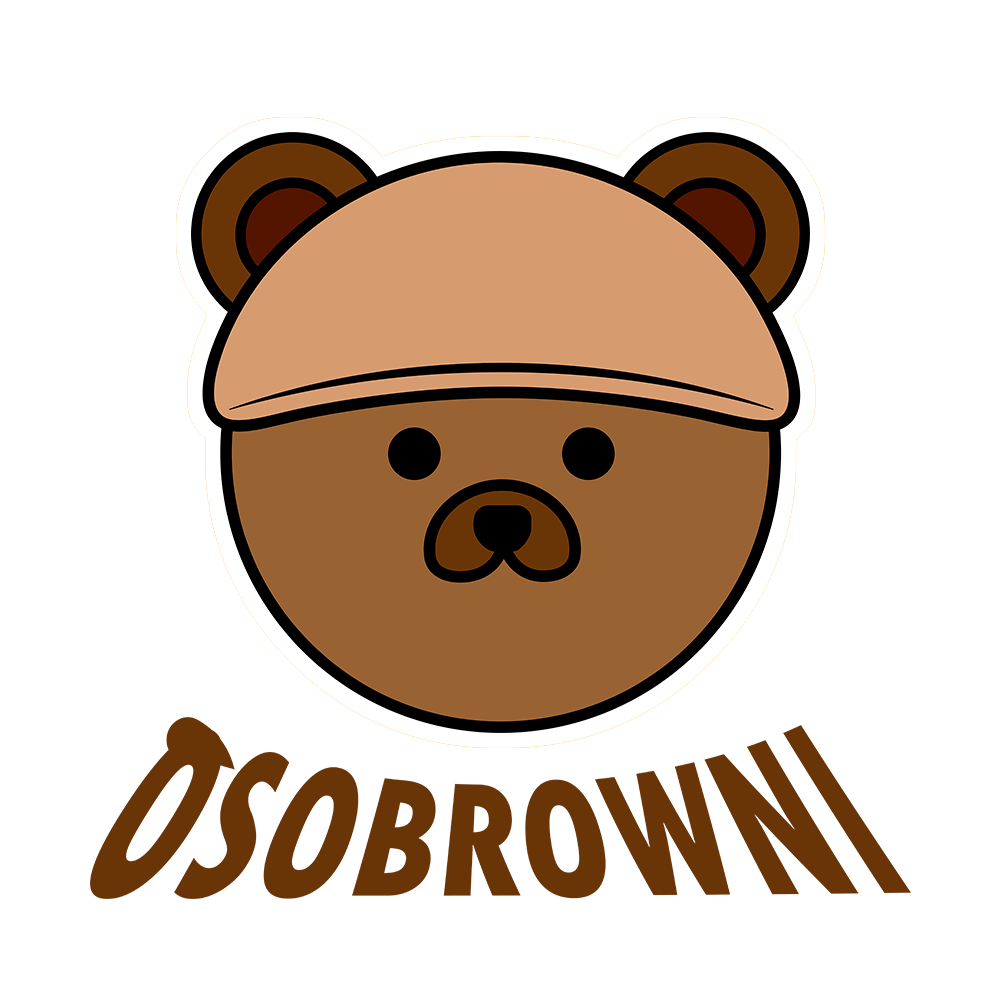
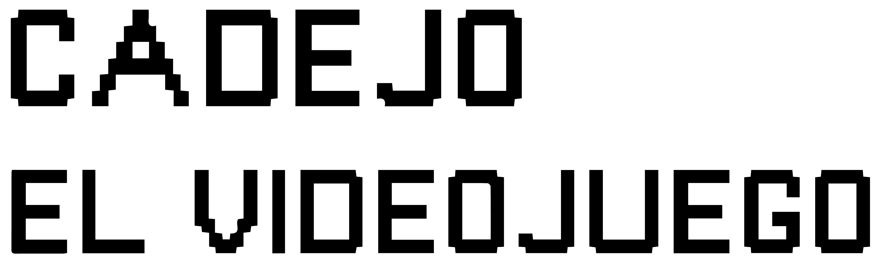

Mundo Digital
Diseños web y creaciones para redes sociales que exploran la comunicación visual en la era digital.


PÁGINA WEB OSOBROWNI
La primera página web desarrollada para mi marca artística Osobrowni, creada con el propósito de mostrar mis ilustraciones, habilidades como artista y promover mi emprendimiento de camisas sublimadas y comisiones de dibujo. Esta web fue la precursora de Sozoria, la versión renovada y evolucionada de mi portafolio.
Haz click aquí para ver la página web

CADEJO: EL VIDEOJUEGO
Cadejo: El Videojuego es un prototipo inspirado en la leyenda urbana de El Cadejo y en la estética de la marca Cadejo Brewing Company.
El objetivo del juego es recolectar botellas de cerveza mientras el jugador evita ser atrapado por el cadejo.
Haz click aquí para jugar el juego en itch.io
LUDOLITA WORLD
Ludolita World es un prototipo de ludoteca interactiva para web y dispositivos móviles, creada con el propósito de enseñar a niños de primaria conceptos básicos mediante minijuegos, cuentos, letras, números y formas.
El aprendizaje se vuelve más divertido e interactivo de la mano de su protagonista: Ludolita, la conejita.
Haz click aquí para ver la página web


{kind=link}
{kind=link}
{kind=link}
{kind=link}
{kind=link}
{kind=link}